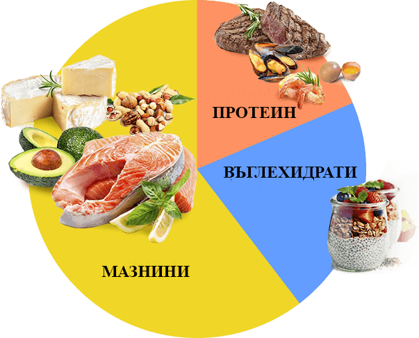

«Откакто се помня – винаги съм на диета. Гладувания, проблеми със съня и кожата бяха моите постоянни спътници. На кантара се появяваше минус, но след това следваше преяждане и всички заппочваше отново. Научих за KETO DIET от диетолога. Резултатът от отслабването почти веднага ме зарадва. Всяка седмица виждах на кантара минус 3 кг. За мен това беше истинска магия. Здравословното ми състояние беше много добро, не изпитвах глад, спах по 7 часа».
Ивета Н., на 27 години

«За мен KETO DIET стана спасение. Никога преди не съм мислила, че мога да ям всичко, което обичам, и в същото време да отслабвам. Истина е, че винаги съм имала излишък от въглехидрати в храненето си. Това доведе до наднормено тегло от 100 кг на 29 години. Като цяло, след като леко коригирах количеството въглехидрати, теглото ми започна да намалява. Но без въглехидрати не мога да живея, защото обичам бързото хранене. Тогава разбрах за KETO DIET. След като взех това лекарство, процесът на изгаряне на излишъка тръгна много по-бързо и дори не трябваше да се отказвам от въглехидратите. Общо за 4 месеца свалих 25 кг. KETO DIET е просто супер! Препоръчвам го на всички!»
Дарина К., на 49 години

Колко малко знаем за нашето тяло. Дори не съм се замисляла какви сложни процеси се случват в него, докато не отидох на диетолог и не чух за кетозата. Аз съм мързелива. Не мога да спазвам диети, да спортувам също. Затова търсех нещо лесно и бързо. За KETO DIET мога да кажа едно нещо – трябва да го вземете! С помощта на това средство успях да сваля рекордните 15 кг и да постигна перфектната си фигура.
Невена Р., на 34 години